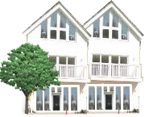

Restoration Projects
We have many years experience in renovating aged Irish buildings to meet contemporary needs in a sympahetic manner. Our experience on a wide range of projects is exemplary. We have been involved in restoring Irish farmhouses, country cottages and larger country houses.
We would be pleased to help you renovate to your liking any type of house or cottage in the Irish countryside.
Please contact us to discuss your specific requirement or projects we have completed for private clients.
Renovations
Typical renovations undertaken would include:
- Strip out old floors and ceilings.
- Strip out floors including saving any stone flags for reuse if present.
- Extend to one or more elevations if necessary.
- Attend to roof and windows, replacing or repairing as necessary, making sure to keep to the character of the original.
- With a waterproof envelope formed, works can take place to fit out the interior to meet today's requirements in terms of airtightness, insulation and surface finishes.
- Groundworks and external decoration add the final touches.
- The final result will be sympathetic towards it's surroundings while meeting modern standards for living spaces.

Navigation
Contact Details
Chris Reilly,
Building Contractor,
Whitepark,
Dysart,
Mullingar,
Co. Westmeath.
T: 044 9226154
info@chrisreillyconstruction.com